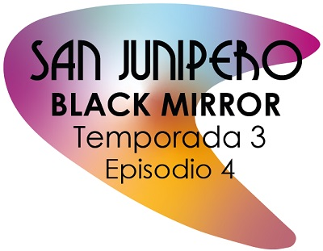

Una joven y tímida chica llamada Yorkie , está de visita en San Junípero y conoce a Kelly, una linda y extrovertida chica afroestadounidense.
Black Mirror es una serie de televisión antológica británica de ciencia ficción distópica creada por Charlie Brooker. Presentar relatos autoconclusivos que muestran generalmente un sentimiento de tecno-paranoia y analizan cómo la tecnología afecta al ser humano.